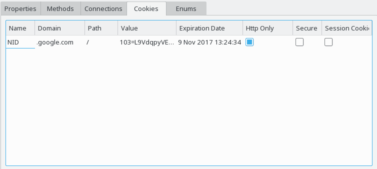

Application Attributes Examples
The HTTP cookie view shows a list of cookies held by a cookie store associated with the currently selected object. In particular these can be:

The information shown in the HTTP cookie view correspond to the properties of QNetworkCookie.